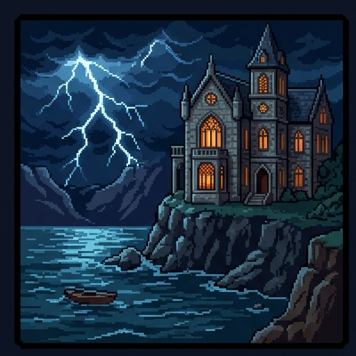
The Villa Diodati Clinic
It is a few years from now. On a stormy night, Mary and Percy arrive at a clinic on the shore of Lake Geneva.
They want a child. A doctor here says she can edit that child's genes before the pregnancy begins. You will help them decide what would be acceptable.
Use → (or Next) to advance and reveal points. F = fullscreen.
Where You Stand Now
Rate each statement. There are no right answers, and you'll rate them again at the end.
Parents should be free to use medicine to prevent a serious disease in their future child.
Curing a disease and making a healthy child "better" are morally different things.
A change that can never be undone should not be made, however good the reason.
It is wrong to make a permanent change to a person who cannot agree to it.
If only rich families could afford a new medical technology, it would be better if nobody had it.
Meet Mary and Percy
Mary and Percy met in a hospital waiting room. Both were born with cystic fibrosis, or CF.
- CF is a genetic disease. It comes from a person's genes, not from a germ, so nobody can catch it.
- It makes the mucus in the lungs thick and sticky. Breathing gets harder and lung infections are common.
- New medicines help most people with CF live much longer. They still need treatment every day for life.
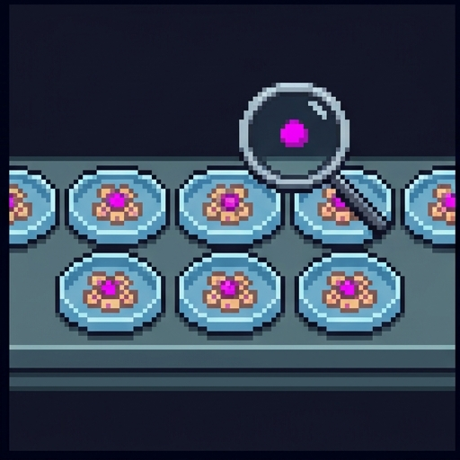
Why Not Pick a Healthy Embryo?
Genes come in pairs, one copy from each parent. A person has CF only if both copies of one gene are faulty.
- An embryo is the tiny ball of cells a fertilized egg grows into. Most at-risk couples can have several made in a lab and tested.
- Doctors then use an embryo without the disease. This is called embryo screening.
- Mary has two faulty copies, and so does Percy. Every embryo of theirs gets a faulty copy from each parent.
- Screening can only choose, and here there is no embryo without CF to choose. The gene would have to be changed.
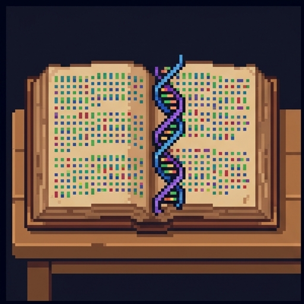
DNA Is a Recipe Book
Almost every cell in your body holds a copy of your DNA: the instructions for building and running you.
- Think of DNA as a recipe book. A gene is one recipe, and it tells the cell how to make one part.
- The CF gene is the recipe for a part that moves salt and water out of cells. A mistake in that recipe makes the mucus thick.
- Gene editing means changing a recipe on purpose. A tool called CRISPR, first described in 2012, can find one spot in the DNA and cut it.
- The book is about three billion letters long. Editing aims to fix one typo and leave the rest alone.
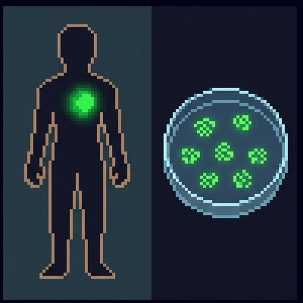
Two Kinds of Cells
What an edit does depends on which cells it changes.
- Somatic cells are the cells of your body: lungs, skin, blood, brain. An edit there stays in that one person.
- Germline cells are eggs and sperm, and the cells that make them. They carry DNA to the next generation.
- A brand-new embryo counts as germline too. An edit there is copied into every cell the person will ever have, eggs or sperm included.
- So a germline edit is heritable: it can be passed down to children.
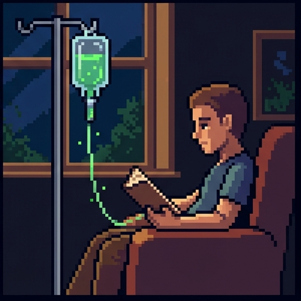
Somatic Editing Is Already Here
In 2023 the US and UK approved Casgevy, the first medicine that uses CRISPR. It treats sickle cell disease, a painful genetic blood disease.
- Doctors take out some of the patient's blood-making cells, edit them in a lab, and put them back.
- The edited cells make healthy blood. The patient's eggs or sperm are not changed, so nothing is passed on.
- The patient can be told the risks and can agree or refuse.
- Few people object to somatic editing itself. The arguments about it are over cost and safety.
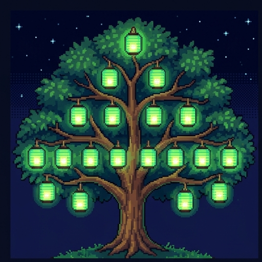
An Edit That Travels
Mary and Percy would need a germline edit: fixing the CF gene in a brand-new embryo.
- Their child would grow up without CF. That child's children could inherit the fixed gene too.
- This is the promise of germline editing. One edit could remove a disease from a whole family line.
- It is also the worry. Everyone below the top lantern receives the change without being asked.
Watch the Edit Travel
Somatic vs. Germline
Both use the same editing tool. They differ in which cells are changed, and so in who is affected.
Changes body cells in a person who is already here. The change ends with that person.
Casgevy edits a patient's blood-making cells to treat sickle cell disease.
Changes an egg, a sperm, or a brand-new embryo. The change is in every cell and can be passed on.
Mary and Percy's request: fix the CF gene in an embryo before pregnancy begins.
Which Edits Could Be Passed On?
Editing a fertilized egg in the lab before it starts to divide
Editing the cells in a man's body that make his sperm
Editing an egg cell before it has been fertilized
Editing the blood-making cells of a teenager with sickle cell disease
Editing the lung cells of an adult who has cystic fibrosis
Editing the liver cells of a newborn baby with a rare disease
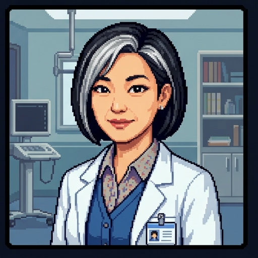
Dr. Byron Has a Menu
Dr. Byron runs the clinic. She offers more than Mary and Percy came to ask for.
- First, the real world. Today dozens of countries ban germline editing for making babies, and none clearly allows it.
- In this story the law has changed, and the clinic is legal.
- Dr. Byron says she can fix the CF gene. Then she slides a menu across her desk.
- "While we are editing," she says, "we could do more than fix things."
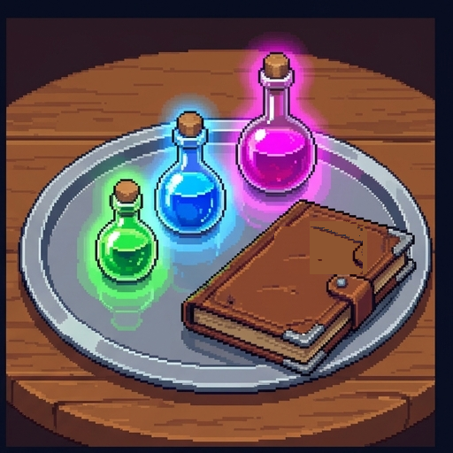
Three Things on the Menu
- 1. Fix a disease. Correct the CF gene, so the child does not have cystic fibrosis.
- 2. Lower a risk. Add a rare gene version that keeps cholesterol low and protects against heart disease in old age.
- 3. Add an advantage. Edits meant to make the child taller, or better at remembering.
- A reality check: height and memory depend on thousands of genes and on how you live. Nobody can do item 3 today.
Treatment or Enhancement?
Philosophers sort Dr. Byron's menu with two words.
- Treatment: fixing or preventing a disease, to bring a person to normal health.
- Enhancement: improving a healthy person beyond normal health.
- Many people say treatment is acceptable and enhancement is not. The cases in the middle are hard to sort.
- A vaccine gives a healthy child protection nobody is born with. Doctors sometimes give growth hormone to healthy children who are very short.
Draw Your Line
Why the Line Is Hard to Draw
It prevents disease by improving a healthy body, so both labels fit
It changes eggs and sperm, so the protection is passed to children
It only helps people who are sick, so it is plainly a treatment
It shows that nobody can tell a disease from a healthy body at all
The Case For: Prevent Suffering
Percy speaks first. He has spent an hour or two of every day on treatments, and he does not want that for his child.
- The argument: a serious disease causes real suffering. If we can safely prevent it, we have a strong reason to.
- We already reason this way. It is why we vaccinate children and treat sick babies.
- A germline fix could also spare the child's own children. No other treatment does that.
- Notice the word safely. The argument depends on it, and Mary will ask about it.
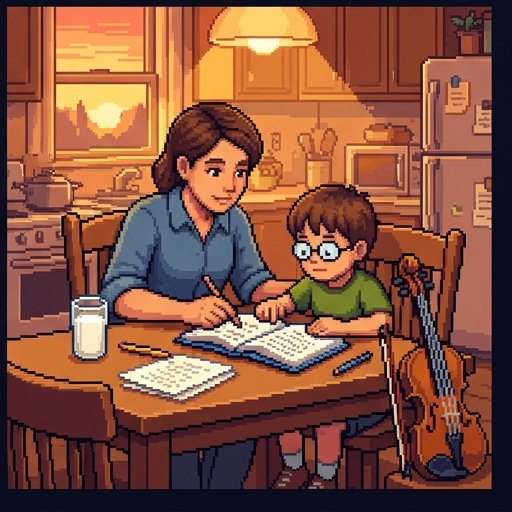
The Case For: Parents Already Choose
Percy's second argument defends item 3, the advantages.
- Parents shape their children all the time. They pick the school, the food, the music lessons, the braces.
- Nobody asks a baby whether it wants vitamins or a tutor. We think good parents provide them.
- So Percy asks: if helping a child through upbringing is fine, why is helping through genes wrong?
- To answer him, you have to find a difference between the two that matters morally.
Is Editing Just More Parenting?
Mary thinks the two differ. She compares a child shaped by lessons with a child shaped by an edit.
The child takes part. They can push back, quit, or choose differently as an adult.
A girl made to play violin at seven can stop at fifteen. Her own children start fresh.
It is fixed before the child exists. They cannot push back or undo it, and they may pass it on.
A girl edited for height stays that height. Her children may inherit the edit.
Percy's reply: some upbringing can't be undone either, like the first language you learn.
Percy's Argument, Examined
That tutoring and music lessons are also wrong for parents to choose
That most parents today would not choose to edit their children
That editing and upbringing differ in a way that matters morally
That editing for height and memory is not yet possible to do
Decision Point: The First Item
Yes. Preventing a serious disease is reason enough.
Yes, but only for diseases and never for advantages.
Not yet. I would need to know more about the risks.
No. Nobody should change a family line.
Objection 1: Is It Safe?
Mary opens her notebook. "This has been tried once," she says.
- In 2018 a scientist in China, He Jiankui, announced the birth of twin girls whose genes he had edited as embryos.
- He was trying to make them resist HIV. Safer, proven ways to protect them already existed.
- His data suggested the edits did not come out as planned, and that only some of the girls' cells were edited.
- Scientists around the world condemned the experiment. A Chinese court sent him to prison for three years.
It Can't Be Taken Back
Mary explains why a germline mistake is worse than an ordinary medical mistake.
- Editing tools sometimes cut in the wrong place. This is an off-target edit, and it can damage a healthy gene.
- In a somatic treatment, a mistake harms one patient, who agreed to the risk.
- In an embryo, a mistake is copied into every cell. Like ink dropped in a spring, it flows on to everyone downstream.
- Some harms might not show for decades. By then the mistake could already be in grandchildren.
Watch a Mistake Travel
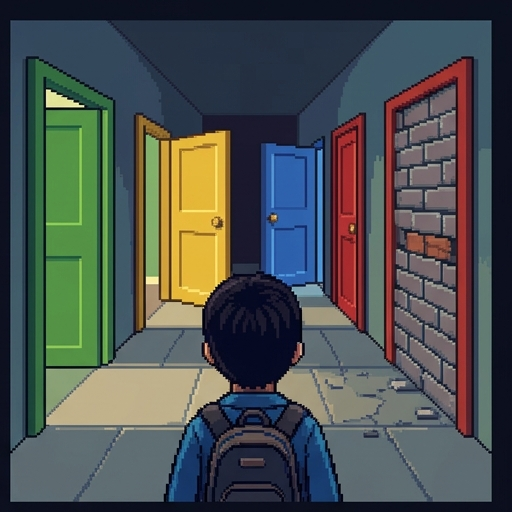
Objection 2: Nobody Asked the Child
The safety objection says not yet. If editing became safe, it would be answered. Mary's second worry would remain.
- In medicine, consent means a patient agrees to a treatment after hearing the risks.
- An embryo cannot consent. Neither can the grandchildren who inherit the edit.
- Percy objects that no baby consents to anything. Parents decide for young children every day.
- Mary agrees. So the question becomes which decisions parents may make, and which belong to the child.
The Right to an Open Future
The philosopher Joel Feinberg gave an answer in 1980. He said children have a right to an open future.
- Some choices are the child's to make later: what work to do, what to believe, what kind of life to lead.
- Parents hold those choices in trust. Their job is to keep the doors open until the child can choose.
- On this view, fixing CF is acceptable. A healthy child has more doors open, not fewer.
- Editing for a trait the parents want is different. It steers the child toward a life the parents picked.
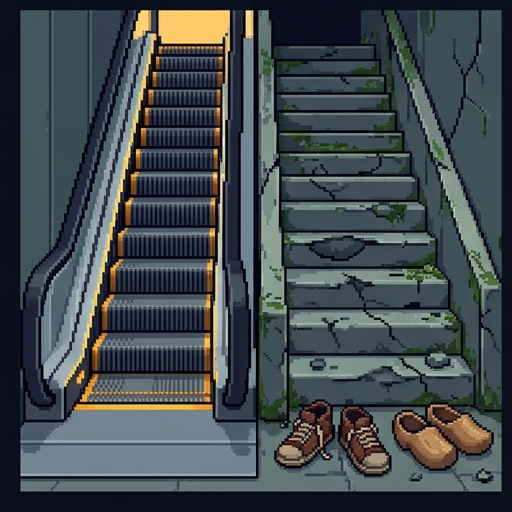
Objection 3: Is It Fair?
Mary's last worry is about everyone else's children.
- Gene medicine is expensive. Casgevy costs about $2.2 million per patient in the US.
- If only rich families can buy edits, their children start ahead. Germline edits are inherited, so the gap could grow each generation.
- History adds a warning. In the 1900s, US states sterilized more than 60,000 people they judged "unfit" to have children.
- Percy's reply: new medicine often starts expensive. The answer may be to pay for everyone, as with vaccines.
Name That Argument
Pick the argument each speaker is using.
"We can't know what this edit does in forty years, and we could never call it back."
safety
"Her great-grandchildren will carry this change, and nobody can check with them first."
consent
"In fifty years, families who could pay will have healthier, taller children than everyone else."
fairness
"We give her vitamins and piano lessons without asking. How is this any different?"
parents already choose
Change One Fact
The safety objection, because a mistake still can't be taken back
The consent objection, because future people still aren't asked
The fairness objection, because rich families still get there first
None of them, because all three depend on the cost and the risk
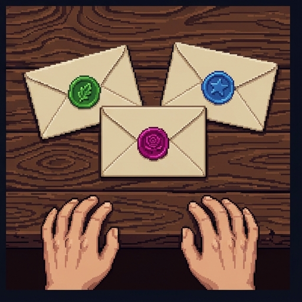
Three Envelopes
It is nearly morning. Dr. Byron leaves three envelopes on the table, one for each item on her menu.
- For: preventing suffering, and the comparison with ordinary parenting.
- Against: safety, consent and the open future, and fairness.
- The arguments do not apply equally to every envelope. The case for fixing CF is not the case for extra height.
Your Decision
Where You Stand Now
These are your ratings from the start. Rate each statement again.
Morning at the Villa
- Somatic edits change one person's body cells. Germline edits are in every cell and can be inherited.
- Treatment fixes or prevents disease. Enhancement goes beyond health. The middle cases are hard to sort.
- For: preventing serious suffering, and the comparison with ordinary parenting.
- Against: safety says not yet, consent asks who decides, and fairness asks who is left behind.
The idea for Frankenstein came to Mary Shelley at the real Villa Diodati in 1816. Her scientist makes a living being and then abandons it.